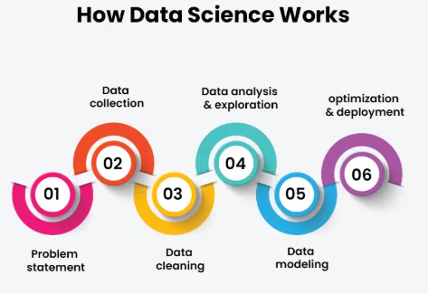

Data science is a multidisciplinary field that uses scientific methods, algorithms, and systems to extract knowledge and insights from structured and unstructured data. In this blog post, we will explore the various aspects of data science, its importance, and its applications in today's world.
Recent advancements in AI are transforming the way data scientists approach their work. From automated data cleaning to predictive analytics, AI tools are enhancing productivity and accuracy.
Data scientists have played a crucial role in tracking the spread of COVID-19 and predicting outcomes using complex models, providing valuable insights for public health decisions.
Data science is an ever-evolving field that continues to shape industries and improve decision-making processes. As we delve deeper into the world of data, the importance of data science will only grow, making it an exciting area to explore for anyone interested in technology and analytics.